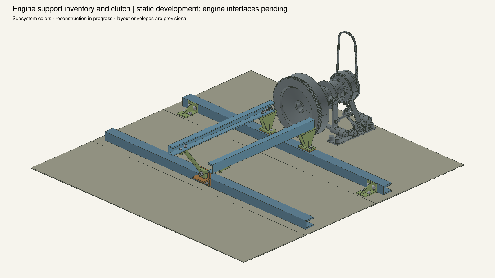
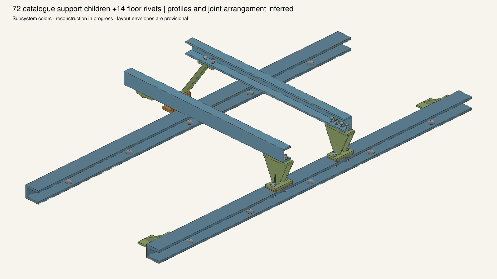
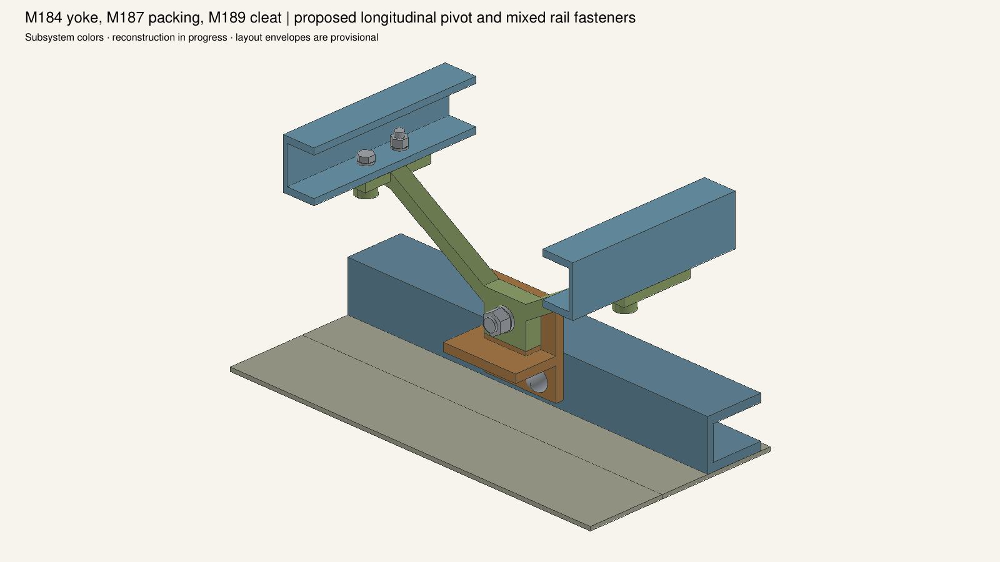
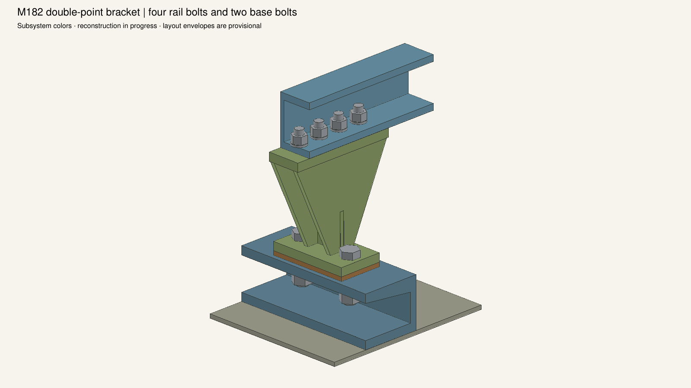
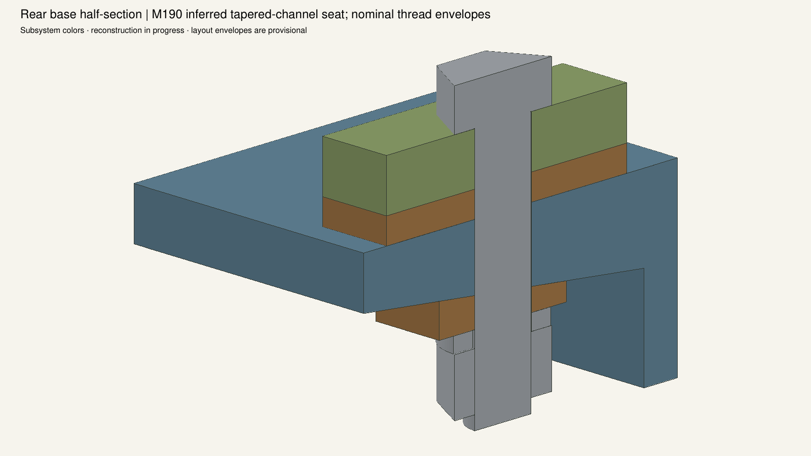
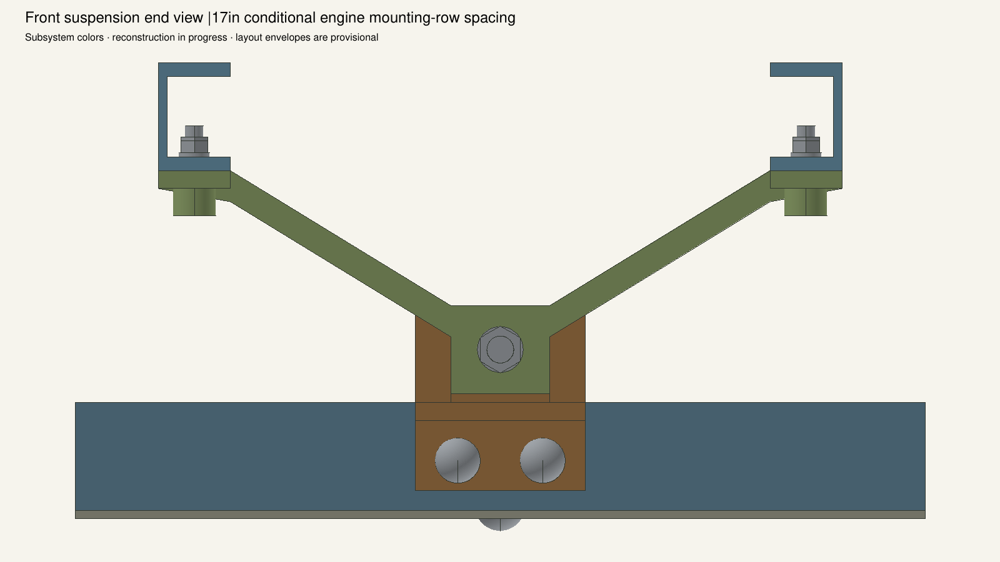
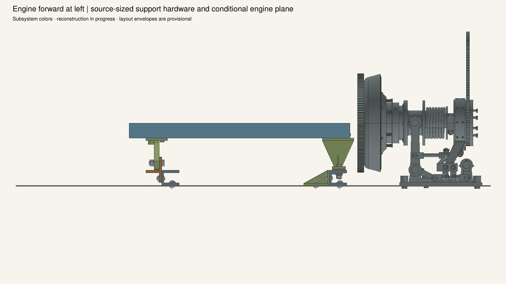
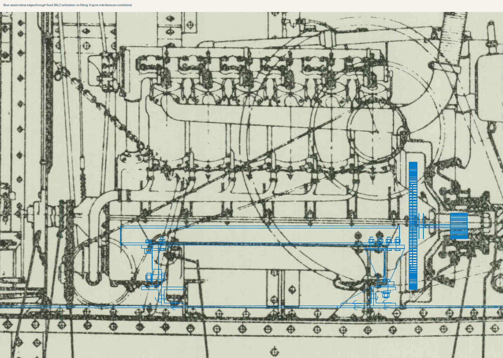

The72 support-assembly children and14 direct floor rivets are populated. Castings and joint arrangement remain estimated. Engine case receivers,12 rail bolt sets and7 shared hull-angle rivets are pending; no complete tank-engine installation is claimed.








